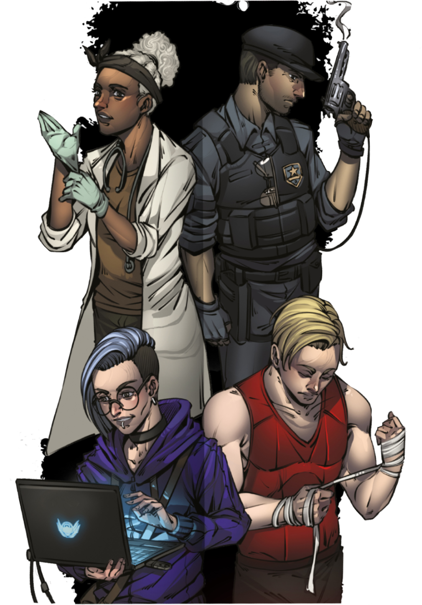
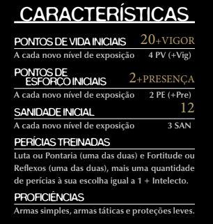
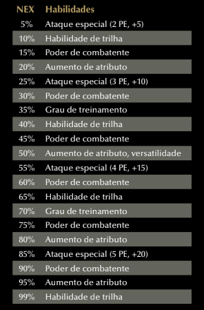
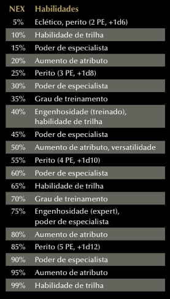
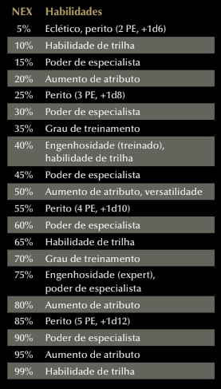
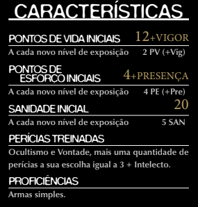
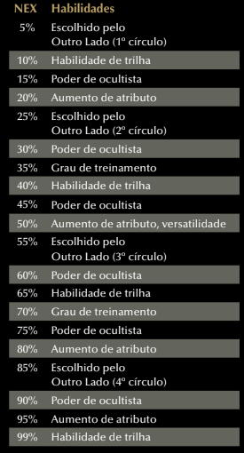

ATRIBUTOS
AGILIDADE
Define sua coordenação motora, velocidade de reação e destreza manual.
Atributo-base das perícias Acrobacia, Furtividade, Iniciativa, Crime, Pilotagem, Pontaria e Reflexos.
FORÇA
Determina sua potência muscular e habilidade atlética.
Atributo-base das perícias Atletismo e Luta, além de ser aplicada em suas rolagens de dano corpo a corpo e com armas de arremesso.
INTELECTO
Mede seu raciocínio, memória e educação geral. Afeta sua compreensão do Outro Lado e sua capacidade de racionalizar o paranormal, definindo o número de rituais que você pode aprender.
Atributo-base das perícias Atualidades, Ciências, Investigação, Medicina, Profissão, Sobrevivência, Tática e Tecnologia.
PRESENÇA
Define suas habilidades sociais e resiliência mental-emocional.
Atributo-base das perícias Diplomacia, Enganação, Intimidação, Intuição, Percepção, Ocultismo, Religião e Vontade, além de conceder pontos de esforço adicionais por nível de exposição (NEX).
VIGOR
Determina mede sua saúde e resistência física.
Atributo-base de Fortitude, além de conceder pontos de vida adicionais por nível de exposição.
NEX - EXPOSIÇÃO PARANORMAL
Representa o quanto do personagem já foi exposto ao Outro Lado, e por isso, também indica o quanto de sua mente já foi “tomada” por ele.
Uma pessoa com 100% de NEX equivale a alguém que entende completamente o Outro Lado.
Qualquer coisa pode acontecer com alguém que atinge NEX 100%, desde ficar irreversivelmente insano até se transformar em uma Criatura do Outro Lado. Saber tudo é perder tudo.
ORIGENS
Ao escolher uma origem, você recebe duas perícias treinadas e um poder da origem.
Acadêmico
Perícias treinadas:
Ciências e Investigação.
Saber é Poder:
Quando faz um teste usando Intelecto, você pode gasta 2 PE para receber +5 nesse teste.
Agente de Saúde
Perícias Treinadas
Intuição e Medicina.
Técnica Medicinal.
Sempre que cura um personagem, você adiciona seu Intelecto no total de PV curados.
Amnésico
Perícias Treinadas:
Duas à escolha do mestre.
Vislumbres do Passado:
Uma vez por missão, você pode fazer um teste de Intelecto (DT 10) para reconhecer pessoas ou lugares familiares, que tenha encontrado antes de perder a memória. Se passar, recebe 1d4 PE temporários e, a critério do mestre, uma informação útil.
Artista
Perícias Treinadas:
Artes e Enganação.
Magnum Opus:
Uma vez por missão, pode determinar que um personagem envolvido em uma cena de interação o reconheça. Você recebe +5 em testes de Presença e de perícias baseadas em Presença contra aquele personagem.

Atleta
Perícias Treinadas:
Acrobacia e Atletismo.
110%:
Quando faz um teste de perícia usando Força ou Agilidade (exceto Luta e Pontaria) você pode gastar 2 PE para receber +5 nesse teste.
Chef
Perícias Treinadas:
Fortitude e Profissão (cozinheiro).
Ingrediente Secreto:
Em cenas de interlúdio, você pode gastar uma ação para cozinhar um prato gostoso. Cada membro do grupo (incluindo você) que gastar uma ação para se alimentar recebe o benefício de dois pratos.
Criminoso
Perícias Treinadas:
Crime e Furtividade.
O Crime Compensa:
No final de uma missão, escolha um item encontrado na missão. Em sua próxima missão, você pode incluir esse item em seu inventário sem que ele conte em seu limite de itens por patente.
Cultista Arrependido
Perícias Treinadas:
Enganação e Ocultismo
Traços do Outro Lado:
Você possui um poder paranormal à sua escolha. Porém, começa o jogo com metade da Sanidade normal para sua classe.
Desgarrado
Perícias Treinadas:
Fortitude e Sobrevivência.
Calejado:
Você recebe +1 PV para cada 5% de NEX.
Engenheiro
Perícias Treinadas:
Profissão e Tecnologia.
Ferramentas Favoritas:
Você pode escolher um kit de perícia e considerar sua categoria como uma abaixo da real (por exemplo, um kit de perícia de categoria II conta como categoria I para você).
Executivo
Perícias Treinadas:
Diplomacia e Profissão.
Processo Otimizado:
Sempre que faz um teste de perícia durante um teste estendido, pode pagar 2 PE para receber +5 nesse teste.
Investigador
Perícias Treinadas:
Investigação e Percepção.
Faro para Pistas:
Uma vez por cena, quando fizer um teste para procurar pistas, você pode gastar 1 PE para receber +5 nesse teste.
Lutador
Perícias Treinadas:
Luta e Reflexos.
Mão Pesada:
Você recebe +2 em rolagens de dano com ataques corpo a corpo.
Magnata
Perícias Treinadas:
Diplomacia e Pilotagem.
Patrocinador da Ordem:
Seu limite de crédito é sempre considerado um acima do atual.
Mercenário
Perícias Treinadas:
Iniciativa e Intimidação.
Posição de Combate:
No primeiro turno de cada cena de ação, você pode gastar 2 PE para receber uma ação de movimento adicional.
Militar
Perícias Treinadas:
Pontaria e Tática.
Para Bellum:
Você recebe +2 em rolagens de dano com armas de fogo.
Operário
Perícias Treinadas:
Fortitude e Profissão.
Ferramenta de Trabalho:
Escolha uma arma que poderia ser usada como ferramenta em sua profissão. Você sabe usar essa arma e recebe +1 em testes de ataque, rolagens de dano e margem de ameaça com ela.
Policial
Perícias Treinadas:
Percepção e Pontaria.
Patrulha:
Você recebe +2 em Defesa.
Religioso
Perícias Treinadas:
Religião e Vontade.
Acalentar:
Você pode usar Religião em vez de Diplomacia para fazer a ação acalmar. Além disso, quando acalma uma pessoa, ela fica com 1d6 de Sanidade, em vez de 1.
Servidor Público
Perícias Treinadas:
Intuição e Vontade.
Espírito Cívico:
Sempre que faz um teste para prestar ajuda, você pode gastar 1 PE para aumentar o bônus concedido em +2.
Teórico da Conspiração
Perícias Treinadas:
Investigação e Ocultismo.
Eu Já Sabia:
Você não se abala com entidades ou anomalias. Afinal, sempre soube que isso tudo existia. Você recebe resistência a dano mental igual ao seu Intelecto.
T.I.
Perícias Treinadas:
Investigação e Tecnologia.
Motor de Busca:
A critério do Mestre, sempre que tiver acesso a internet, você pode gastar 2 PE para substituir um teste de perícia qualquer por um teste de Tecnologia.
Trabalhador Rural
Perícias Treinadas:
Adestramento e Sobrevivência.
Desbravador:
Você não sofre penalidade em deslocamento e Sobrevivência por clima ruim e por terreno difícil natural.
Trambiqueiro
Perícias Treinadas:
Crime e Enganação.
Impostor:
Uma vez por cena, você pode gastar 2 PE para substituir um teste de perícia qualquer por um teste de Enganação.
Universitário
Perícias Treinadas:
Atualidades e Investigação.
Empenho:
Você pode não ter muita experiência, mas compensa com dedicação e esforço. Quando faz um teste de perícia (exceto Luta e Pontaria), você pode gastar 2 PE para receber +1d6 nesse teste.
Vítima
Perícias Treinadas:
Fortitude e Vontade.
Cicatrizes Psicológicas:
Você recebe +1 de Sanidade para cada 5% de NEX.
CLASSES
COMBATENTE
Treinado para lutar com todo tipo de armas, e com a força e a coragem para encarar os perigos de frente. É o tipo de agente que prefere abordagens mais diretas e costuma atirar primeiro e perguntar depois.
Além de treinar seu corpo, o combatente também é perito em liderar seus aliados em batalha e cuidar de seu equipamento de combate, sempre preparado para assumir a linha de frente quando a coisa fica feia.
 ESPECIALISTA
Um agente que confia mais em esperteza do que em força bruta. Um especialista se vale de conhecimento técnico, raciocínio rápido ou mesmo lábia para resolver mistérios e enfrentar o paranormal.
O que une todos os especialistas é sua incrível capacidade de aprender e improvisar usando seu intelecto e conhecimento avançado, que pode tirar o grupo todo dos mais diversos tipos de enrascadas.
 

OCULTISTA
Muitos estudiosos das Entidades se perdem em seus reinos obscuros em busca de poder, mas existem aqueles que visam compreender e dominar os mistérios para normais para usá-los para combater o próprio Outro Lado. Esse tipo de agente não é apenas um conhecedor do oculto, como também possui talento para se conectar com Elementos paranormais.
Ocultistas aplicam seu conhecimento acadêmico e suas capacidades de conjuração de rituais em missões para investigar e combater o Paranormal em todas as suas formas, principalmente quando munição convencional não é o suficiente para lidar com a tarefa.
 TRILHAS
ANQUILADOR
Você é treinado para abater alvos com eficiência e velocidade. Suas armas são suas melhores amigas e você cuida tão bem delas quanto de seus companheiros de equipe.
NEX 10% - A Favorita
Escolha uma de suas armas para ser sua favorita. A categoria da arma escolhida é reduzida em I e ela ocupa 1 espaço a menos em seu inventário (mínimo de 0 espaço). Em NEX 40%, a categoria é reduzida em II, em 65% reduzida em III e em 99% reduzida em IV (mínimo de 0).
NEX 40% - Técnica Secreta
Quando faz um ataque com sua arma favorita, você pode gastar 2 PE para executar um dos efeitos abaixo como parte do ataque. Você pode adicionar mais efeitos gastando +2 PE por efeito adicional.
-
Amplo
O ataque pode atingir um alvo adicional em seu alcance e adjacente ao original (use o mesmo teste de ataque para ambos).
-
Destruidor
Aumenta o multiplicador de crítico da arma em +1.
NEX 65% - Técnica Sublime
Você adiciona os seguintes efeitos à lista de sua Técnica Secreta:
-
Letal
Aumenta a margem de ameaça em +2. Você pode escolher este efeito duas vezes para aumentar a margem de ameaça em +5.
-
Perfurante
Ignora até 5 pontos de resistência a dano de qualquer tipo do alvo.
NEX 99% - Máquina de Matar
Sua arma favorita recebe +2 na margem de ameaça e seu dano aumenta em um passo.
COMANDANTE DE CAMPO
Você é treinado para coordenar e auxiliar 25 seus companheiros em combate, tomando decisões rápidas e tirando melhor proveito da situação e do talento de seus aliados.
NEX 10% - Inspirar Confiança
Você pode gastar uma reação e 2 PE para fazer um aliado em alcance curto rolar novamente um teste recém realizado.
NEX 40% - Estrategista
Gaste uma ação padrão e 1 PE por aliado que quiser direcionar (limitado pelo seu Intelecto). No próximo turno do aliado, ele ganha uma ação de movimento.
NEX 65% - Brecha na Guarda
Uma vez por rodada, quando um aliado causar dano em um inimigo que esteja em seu alcance curto, você pode gastar uma reação e 2 PE para que você ou outro aliado em alcance curto faça um ataque adicional contra o mesmo inimigo
NEX 99% - Oficial Comandante
Você pode gastar uma ação completa e 5 PE para que cada aliado que você possa ver em alcance médio receba uma ação padrão adicional no próximo turno dele.
GUERREIRO
Com golpes corpo a corpo tão poderosos quanto uma bala, você encara os perigos de frente.
NEX 10% - Técnica Letal
Você recebe um aumento de +2 na margem de ameaça com todos os seus ataques corpo a corpo.
NEX 40% - Revidar
Sempre que bloquear um ataque, você pode gastar uma reação e 2 PE para fazer um ataque corpo a corpo no inimigo que o atacou.
NEX 65% - Força Opressora
Quando acerta um ataque corpo a corpo, você pode gastar 1 PE para realizar uma manobra derrubar ou empurrar contra o alvo do ataque como ação livre.
Se escolher empurrar, recebe um bônus de +5 para cada 10 pontos de dano que causou no alvo.
Se escolher derrubar e vencer no teste oposto, você pode gastar 1 PE para fazer um ataque adicional contra o alvo caído.
NEX 99% - Potência Máxima
Quando usa seu Ataque Especial com armas corpo a corpo, todos os bônus numéricos são dobrados.
OPERAÇÕES ESPECIAIS
Você é um combatente eficaz, e suas ações são calculadas e otimizadas, sempre antevendo os movimentos inimigos e se posicionando da maneira mais inteligente no campo de batalha.
NEX 10% - Iniciativa Aprimorada
Você recebe +5 em Iniciativa.
NEX 40% - Ataque Extra
Uma vez por rodada, quando faz um ataque, você pode gastar 2 PE para fazer um ataque adicional.
NEX 65% - Surto de Adrenalina
Uma vez por rodada, você pode gastar 5 PE para realizar uma ação padrão ou de movimento adicional.
NEX 99% - Sempre Alerta
Você recebe uma ação padrão adicional no início de cada cena de combate.
TROPA DE CHOQUE
Você é duro na queda. Treinou seu corpo para resistir a traumas físicos, tornando-o praticamente inquebrável, e por isso não teme se colocar entre seus aliados e o perigo.
NEX 10% - Casca Grossa
Você recebe +1 PV para cada 5% de NEX e, quando faz um bloqueio, soma seu Vigor na resistência a dano recebida.
NEX 40% - Cai Dentro
NEX 65% - Duro de Matar
NEX 99% - Inquebrável
Enquanto estiver machucado, você recebe +10 na Defesa e resistência a dano. Enquanto estiver morrendo, em vez do normal, você não fica indefeso e ainda pode realizar ações. Você ainda segue as regras de morte normalmente.
ATIRADOR DE ELITE
NEX 10% - Mira de Elite
NEX 40% - Disparo Letal
NEX 65% - Disparo Impactante
NEX 99% - Atirar para Matar
INFILTRADOR
NEX 10% - Ataque Furtivo
NEX 40% - Gatuno
NEX 65% - Assassinar
NEX 99% - Sombra Fugaz
MÉDICO DE CAMPO
NEX 10% - Paramédico
NEX 40% - Equipe de Trauma
NEX 65% - Resgate
NEX 99% - Reanimação
NEGOCIADOR
NEX 10% - Eloquência
NEX 40% - Discurso Motivador
NEX 65% - Eu Conheço um Cara
NEX 99% - Truque de Mestre
TÉCNICO
NEX 10% - Inventário Otimizado
NEX 40% - Remendão
NEX 65% - Improvisar
NEX 99% - Preparado para Tudo
CONDUÍTE
NEX 10% - Ampliar Ritual
NEX 40% - Acelerar Ritual
NEX 65% - Anular Ritual
NEX 99% - Canalizar o Medo
FLAGELADOR
NEX 10% - Poder do Flagelo
NEX 40% - Abraçar a Dor
NEX 65% - Absorver Agonia
NEX 99% - Medo Tangível
GRADUADO
NEX 10% - Saber Ampliado
NEX 40% - Grimório Ritualístico
NEX 65% - Rituais Eficientes
NEX 99% - Conhecendo o Medo
INTUITIVO
NEX 10% - Mente Sã
NEX 40% - Presença Poderosa
NEX 65% - Inabalável
NEX 99% - Presença do Medo
LÂMINA PARANORMAL
NEX 10% - Lâmina Maldita
-
+0PE
Você pode usar Ocultismo, em vez de Luta ou Pontaria, para testes de ataque com a arma amaldiçoada.
NEX 40% - Gladiador Paranormal
NEX 65% - Conjuração Marcial
NEX 99% - Lâmina do Medo